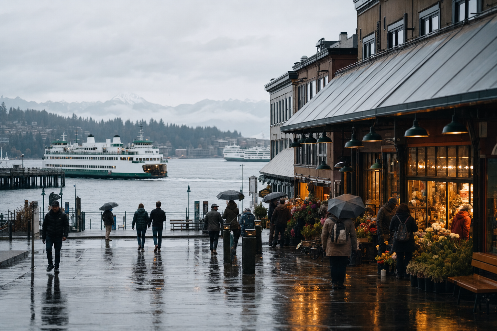

Los Angeles
Ocean light, hillside walks, and late-night food.
Neighborhood notes, seasonal ideas, and airport basics from the Meridian team.
Ocean light, hillside walks, and late-night food.
Harbor paths, brick streets, and compact neighborhoods.
Clear mornings, mountain views, and an easy downtown.
Waterfront markets, evergreen parks, and coffee stops.
Desert color, live shows, and quick weekend energy.
Warm water, bright architecture, and outdoor evenings.
Destination browsing sits somewhere between a route list and a travel magazine. Meridian city pages favor useful scale: a neighborhood or two, a loose shape for a weekend, and enough local texture to help the first search feel grounded.
The cards below rotate through coast, mountains, harbor cities, food-focused weekends, and short breaks. They are starting points, not an attempt to reduce a city to three landmarks.
Learn more ›Compact guides focus on a few neighborhoods and leave room for a traveler to shape the rest.
Weather, daylight, and city rhythm can change the feel of a short trip more than a long checklist ever will.
Each city page links back to airport basics so arrival and departure do not become an afterthought.
City names are only the beginning. The strongest destination choice matches the group’s pace, the season, the travel time, and the small moments everyone wants to remember.
A compact city with dependable transit can feel generous over a long weekend. A broad region with beaches, mountains, or several neighborhood centers may reward a slower itinerary. Build around one or two anchors each day and leave unplanned space for a market, a walk, or the meal nobody knew to book in advance.
Destination guides collect the practical layer that glossy lists often skip: airport-to-city timing, changing weather, neighborhood character, and the hours when popular places are easiest to enjoy. Use those details to decide not only where to go, but where to stay and how much moving around the trip should require.

Follow the coast, choose one museum afternoon, and let dinner define the neighborhood.
Open Los Angeles ›
Brick streets, harbor paths, and compact neighborhoods make a strong long-weekend shape.
Open Boston ›
Clear mornings and mountain views add breathing room to an urban break.
Open Denver ›
Waterfront markets and warm windows make light rain feel like part of the city rather than an interruption.
Open Seattle ›